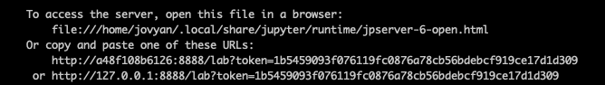

Before we start: How to follow this tutorial#
This tutorial contains a mix of lecture-based and interactive components. The interactive components can be executed in your personal computer locally or using the Binder service. You are welcome to follow along however you like, whether you just want to listen or code along with us.
Attention
Regardless of which setup method you choose, all of the Jupyter notebooks can be found in the docs/notebook folder.
Using Binder#
Clicking the Binder button below will launch an interactive computing environment with all of the necessary software packages pre-installed.

This is the easiest and quickest way to get started.
Attention
If using Binder, please be aware that the state of the computational environment it provides is not permanent. If you are inactive for more than 10 minutes, the environment will timeout and all data will be lost. If you would like to preserve any progress, please save the changed files to your computer.
Local installation (“bare-metal”)#
If you would like to follow along using your own setup and you have a functional Python environment, you can run the following commands in your terminal:
# 1. clone this repository
git clone https://github.com/nipreps/nipreps-book
# 2. install the necessary python packages in your Python environment
cd nipreps-book && pip install -r requirements.txt
# 3. launch a Jupyter lab instance
jupyter lab
The image registration lesson requires an installation of ANTs. Separate instructions can be found for Linux/MacOS users and Windows users.
Local installation (“docker containers”)#
If you have a working Docker installation and would like to use the workshop’s Docker image, you can run the following command in your terminal:
docker run --rm -p 9999:8888 -e JUPYTER_ENABLE_LAB=yes nipreps/nipreps-book:latest
This pulls the latest release of the nipreps/nipreps-book image from Docker Hub. It then starts a container running a Jupyter Notebook server and exposes the server on host port 9999. The server logs are printed to the terminal.
Attention
In any browser, copy and paste the last line from the server logs into the address bar.
Make sure to change the 8888 to 9999.

Docker destroys the container after notebook server exit.